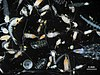

zooplankton

Definition: Zooplankton are the animal component of the planktonic community ("zoo" comes from the Greek word for animal). Plankton are aquatic organisms that are unable to swim effectively against currents. Consequently, they drift or are carried along by currents in the ocean, or by currents in seas, lakes or rivers.
Source: Wikipedia
Wikipedia Page
Wikidata Page